Redesign theo iOS 26 (Liquid Glass) + xu hướng app creative 2026 · 06/07/2026
Trái = bản cũ (nền giấy, serif, nút vuông) · Phải = bản mới (systemBackground, glass chrome, capsule, dark video)
▶ Demo bản cũ ▶ Demo bản mới (bấm thử được)
Nền be → systemGroupedBackground; header dính trên hoá kính khi cuộn; search bar → đảo kính cạnh tab bar (signature iOS 26); chip active đen → green brand; thêm card before/after kéo tay; hero tràn mép; tab bar nổi dạng pill, thu nhỏ khi cuộn.
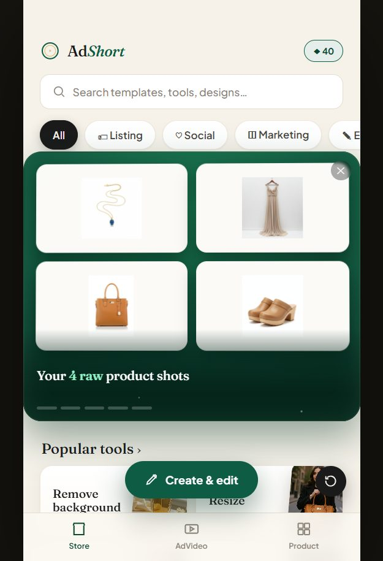
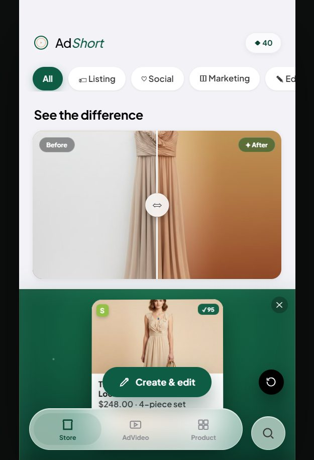
Dark mode toàn màn (chuẩn app video: CapCut/Reels); hero green tràn hết mép; card feed 9:16 phóng to; Switch + credit chip theo biến thể dark.
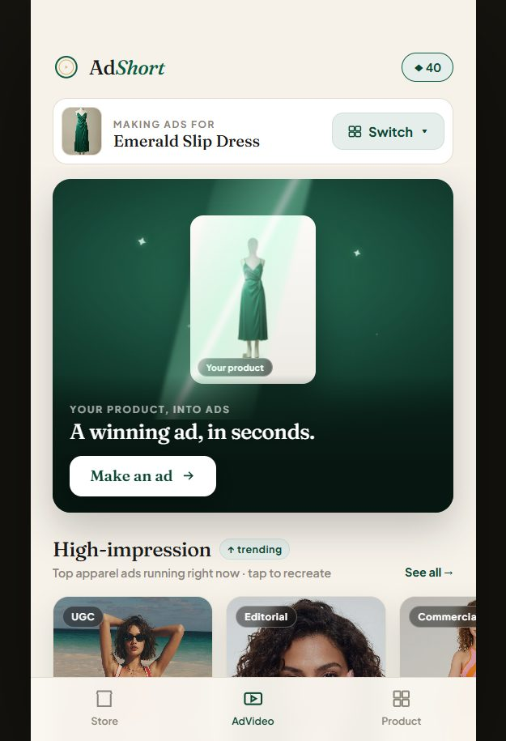
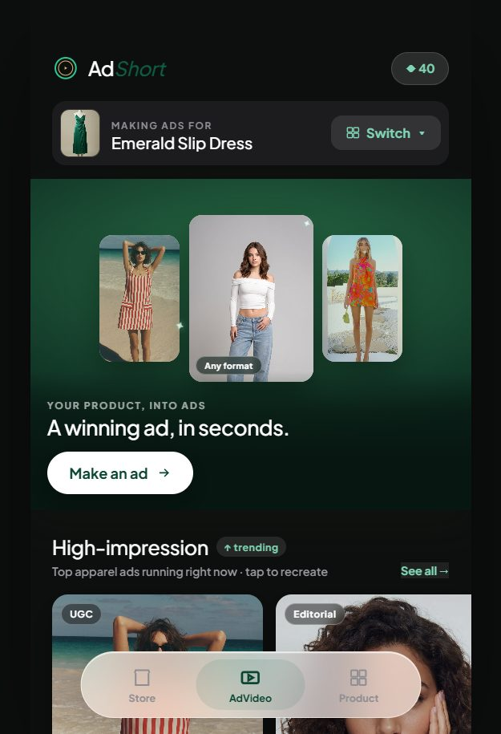
Large title 29px co giãn khi cuộn; card ảnh 4:5 cao, tên đè lên ảnh bằng gradient (kiểu Pinterest); bỏ viền card → shadow; badge video → glass chip.
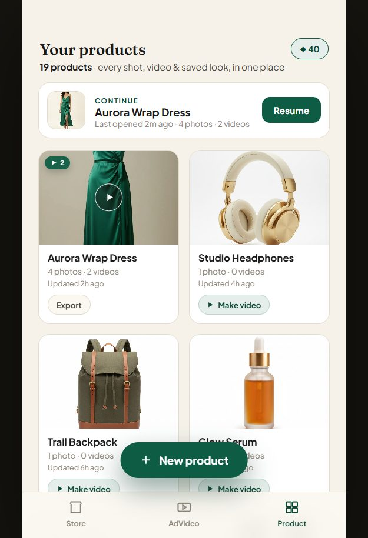
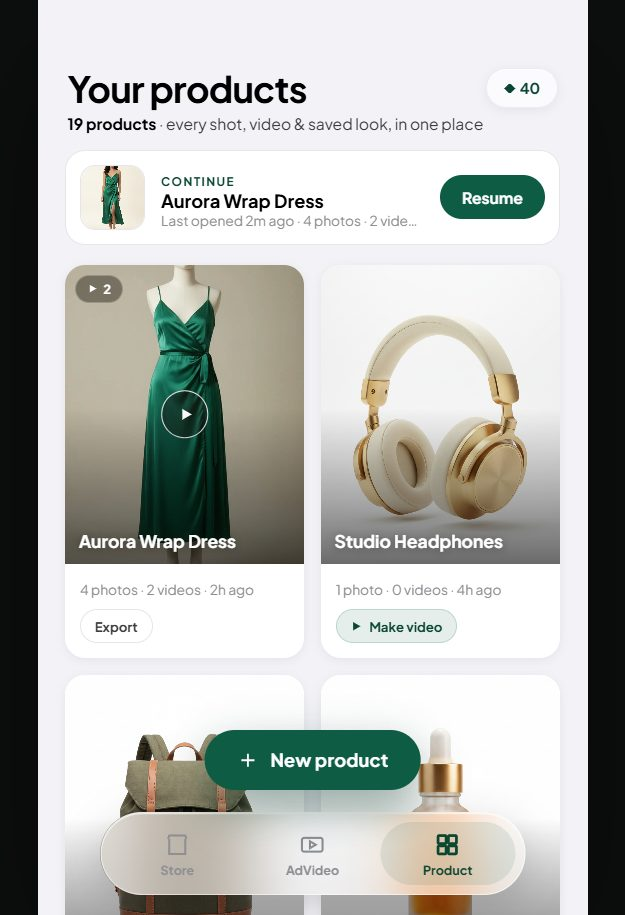
Từ 5 tầng xếp dọc → canvas full màn nền tối, toolbar trên + dock tool dưới đều là thanh kính nổi (kiểu Photoroom); nút Save full-width → capsule Done.
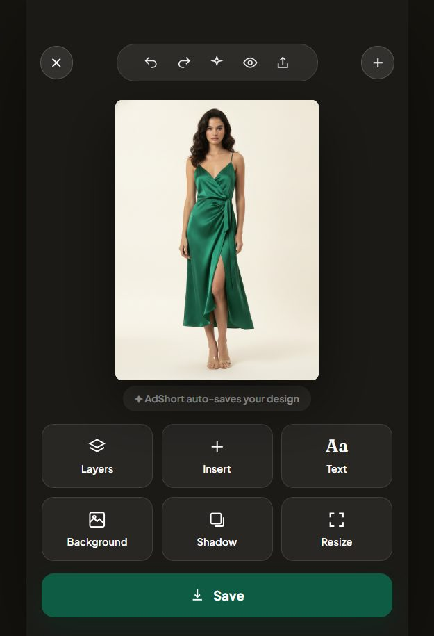
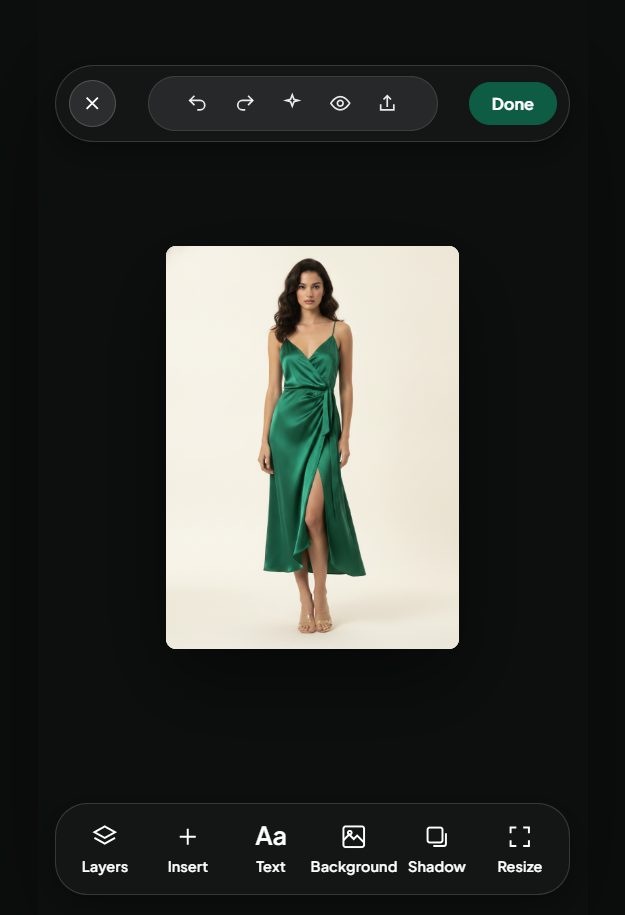
Full-screen trượt kiểu web → bottom sheet iOS: drag handle, góc bo 30px, hở mép trên; nút Generate = gradient AI chạy động + ✦; cảnh báo rulebook thành callout chuẩn.
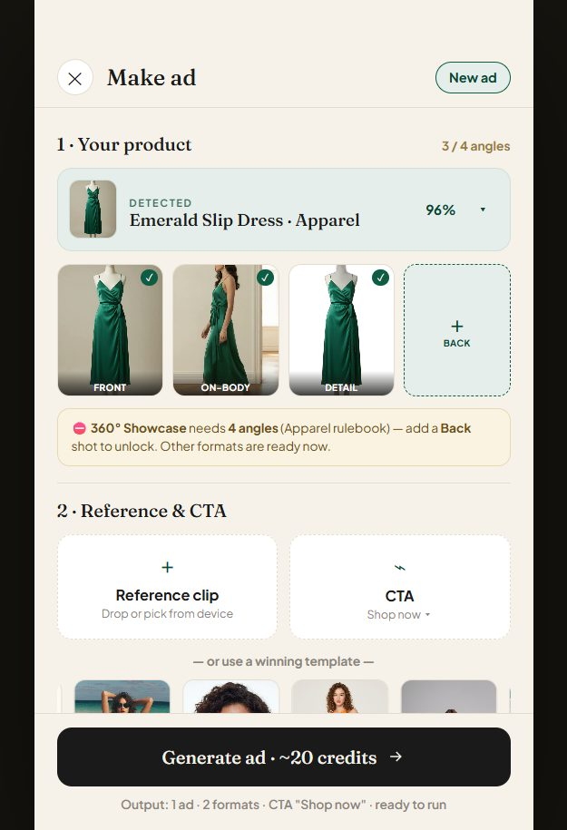
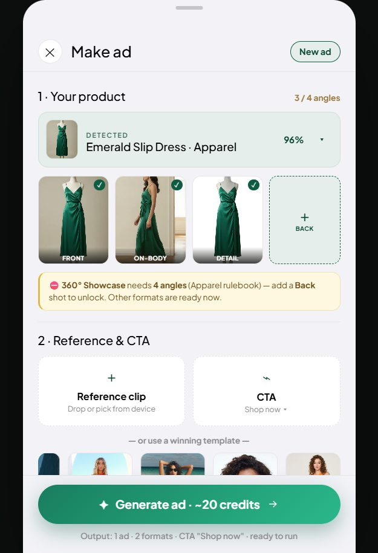
Headline serif → sans đậm; CTA capsule; tier chọn hoá kính; thêm timeline trial Today → Day 5 nhắc → Day 7 tính tiền (pattern tăng convert chuẩn 2026).
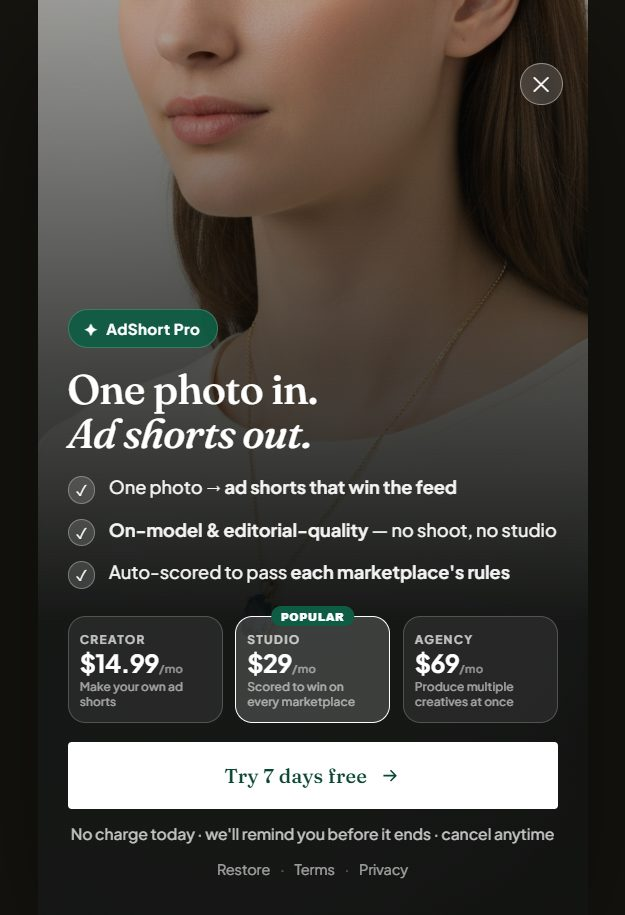
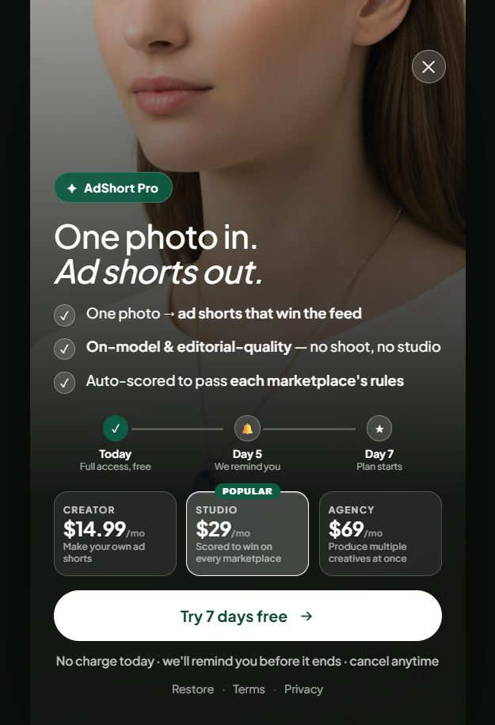
Nền tảng: Apple HIG / WWDC25 Liquid Glass · teardown Photoroom, Pixelcut, CapCut, Canva, Instagram · roadmap đầy đủ trong repo (UI_ROADMAP.md)